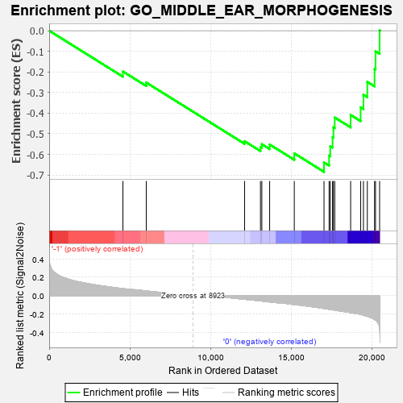
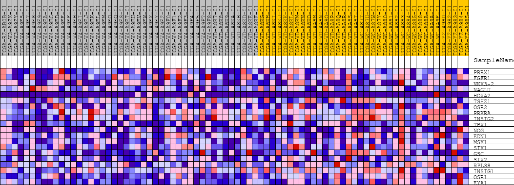
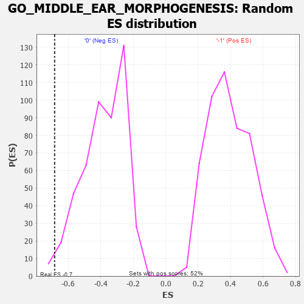

| | | Dataset | GSEAExpression.phenotype_uvm.cls#-1_versus_0 |
| Phenotype | phenotype_uvm.cls#-1_versus_0 |
| Upregulated in class | 0 |
| GeneSet | GO_MIDDLE_EAR_MORPHOGENESIS |
| Enrichment Score (ES) | -0.68481886 |
| Normalized Enrichment Score (NES) | -1.7841436 |
| Nominal p-value | 0.012396694 |
| FDR q-value | 1.0 |
| FWER p-Value | 0.892 |
Table: GSEA Results Summary

Fig 1: Enrichment plot: GO_MIDDLE_EAR_MORPHOGENESIS
Profile of the Running ES Score & Positions of GeneSet Members on the Rank Ordered List
| PROBE | DESCRIPTION
(from dataset) | GENE SYMBOL | GENE_TITLE | RANK IN GENE LIST | RANK METRIC SCORE | RUNNING ES | CORE ENRICHMENT | | 1 | PRRX1 | na | | | 4574 | 0.076 | -0.1979 | No |
| 2 | FGFR1 | na | | | 6021 | 0.051 | -0.2514 | No |
| 3 | NKX3-2 | na | | | 12120 | -0.039 | -0.5361 | No |
| 4 | NAGLU | na | | | 13104 | -0.056 | -0.5655 | No |
| 5 | HOXA2 | na | | | 13190 | -0.058 | -0.5506 | No |
| 6 | TSHZ1 | na | | | 13674 | -0.067 | -0.5520 | No |
| 7 | OSR2 | na | | | 15202 | -0.095 | -0.5949 | No |
| 8 | PRKRA | na | | | 17046 | -0.138 | -0.6391 | Yes |
| 9 | INSIG2 | na | | | 17360 | -0.147 | -0.6059 | Yes |
| 10 | TBX1 | na | | | 17433 | -0.148 | -0.5604 | Yes |
| 11 | NOG | na | | | 17575 | -0.152 | -0.5170 | Yes |
| 12 | EDN1 | na | | | 17629 | -0.154 | -0.4687 | Yes |
| 13 | MSX1 | na | | | 17710 | -0.156 | -0.4209 | Yes |
| 14 | SIX1 | na | | | 18697 | -0.183 | -0.4085 | Yes |
| 15 | GSC | na | | | 19317 | -0.202 | -0.3719 | Yes |
| 16 | SIX2 | na | | | 19491 | -0.211 | -0.3104 | Yes |
| 17 | RPL38 | na | | | 19732 | -0.223 | -0.2483 | Yes |
| 18 | INSIG1 | na | | | 20180 | -0.258 | -0.1849 | Yes |
| 19 | OSR1 | na | | | 20240 | -0.265 | -0.1000 | Yes |
| 20 | EYA1 | na | | | 20493 | -0.343 | 0.0012 | Yes |
Table: GSEA details [plain text format]

Fig 2: GO_MIDDLE_EAR_MORPHOGENESIS
Blue-Pink O' Gram in the Space of the Analyzed GeneSet

Fig 3: GO_MIDDLE_EAR_MORPHOGENESIS: Random ES distribution
Gene set null distribution of ES for GO_MIDDLE_EAR_MORPHOGENESIS